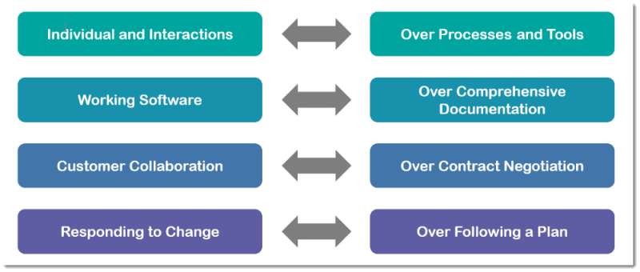
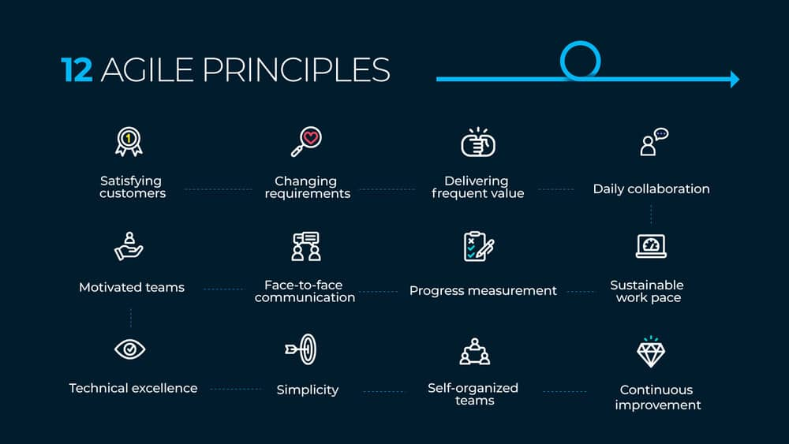
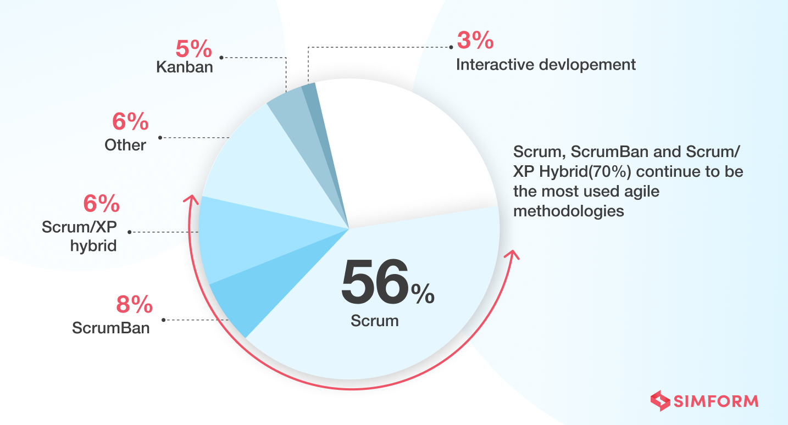
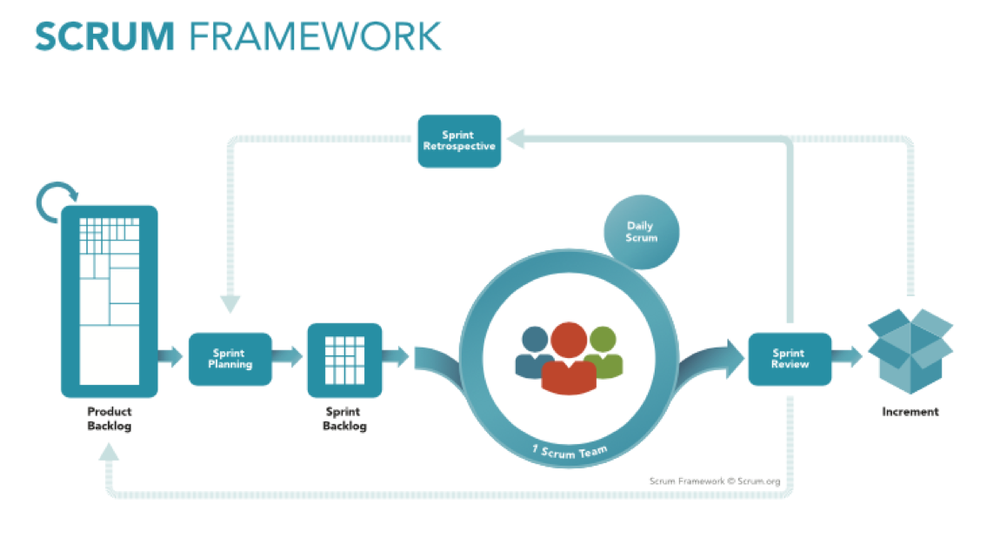
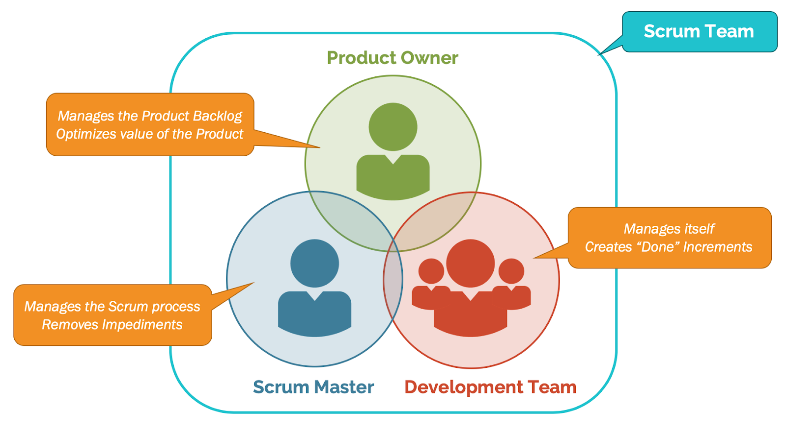
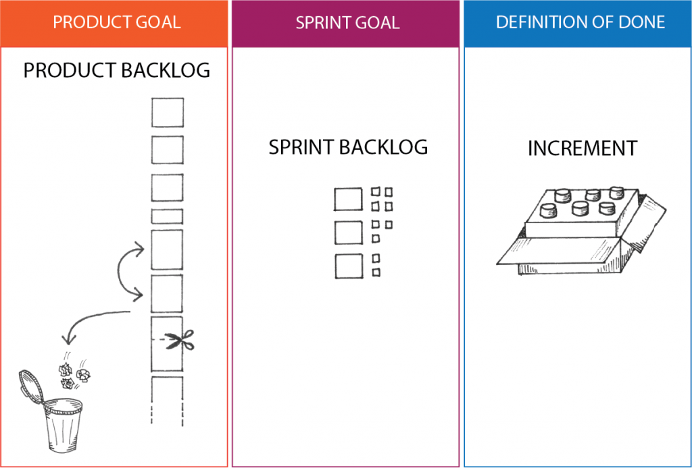

Agile
Historical context
Waterfall model
In 1970, Winston Walker Royce, an American scientist and director of the Lockheed Software Technology Center described the concept of the "cascade model" of software development.
Agile manifesto
So what is agile...
Agile is a system of values (or way of thinking, or philosophy, if you prefer) that facilitates the rapid development of new products that best meet the needs of customers.
12 Agiles principles
Scrum
56% of companies prefer Scrum over other agile methodologies
Scrum process
Scrum roles
Scrum artifacts
Scrum benefits
- Scrum can help teams complete project deliverables quickly and efficiently
- Scrum ensures effective use of time and money
- Large projects are divided into easily manageable sprints
- Developments are coded and tested during the sprint review
- Works well for fast-moving development projects
- Short sprints enable changes based on feedback a lot more easily
Top Agile Statistics
- Full Scrum usage can result in up to a 250% improvement in product quality
- 98% of companies have become more successful because of Agile.
- The leading cause of 44% of Agile project failures is a lack of prior experience with Agile techniques.
- Projects under the agile methodology have a success rate of 64%, while waterfall projects only have a 49%
Agile benefits

Epilogue
Agile will be more widely adopted and fully implemented because of its customer-centered
Thank you for watching
The End